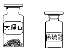
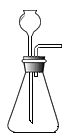
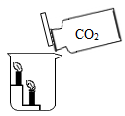

2019年北京市中考化学真题 · 选择题 第6、7、8、9、10题
6. 下列物质含有氢分子的是（ ）
A. H2B. H2O2C. H2CO3D. H2O
7. 下列物质的用途中，利用其物理性质的是（ ）
A. 铜用于制作导线B. 一氧化碳用于炼铁C. 天然气用作燃料D. 氧气用于气焊
8. 下列说法不正确的是（ ）
A. NaOH有腐蚀性B. H2O2能分解
C. H2O是常用的溶剂D. Al在常温下不能与O2反应
9. 下列物质的化学式不正确的是（ ）
A. 干冰—CO2B. 消石灰—Ca(OH)2
C. 纯碱一NaOHD. 小苏打一NaHCO3
10. 下列关于CO2的实验室制法及性质实验的说法不正确的是（ ）
 |  | 
|  |
A、制CO2的药品 | B、发生装置 | C、收集装置 | D、比较CO2与空气的密度 |
A. AB. BC. CD. D